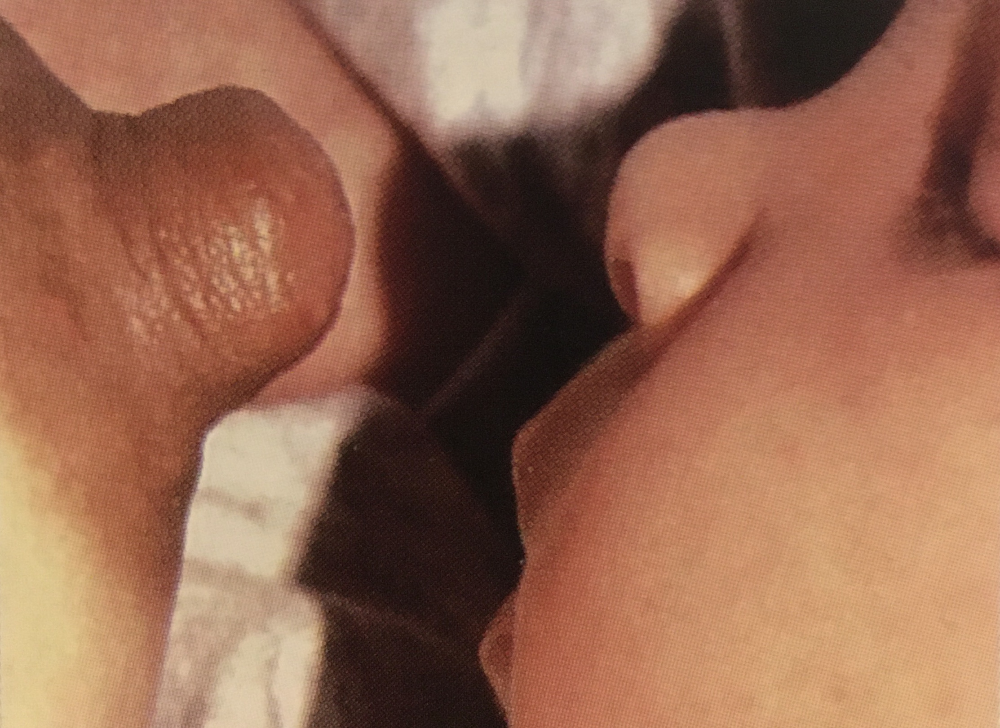
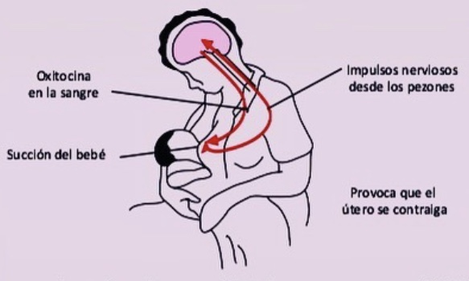
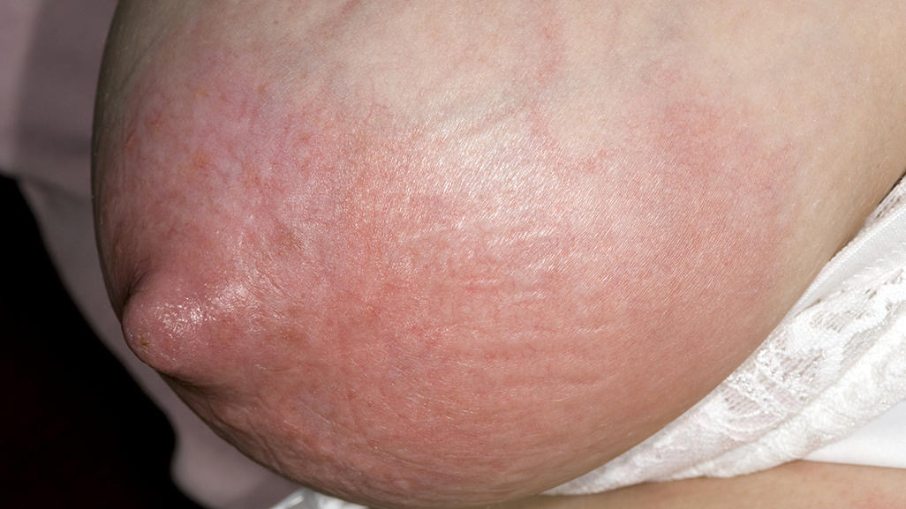
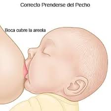
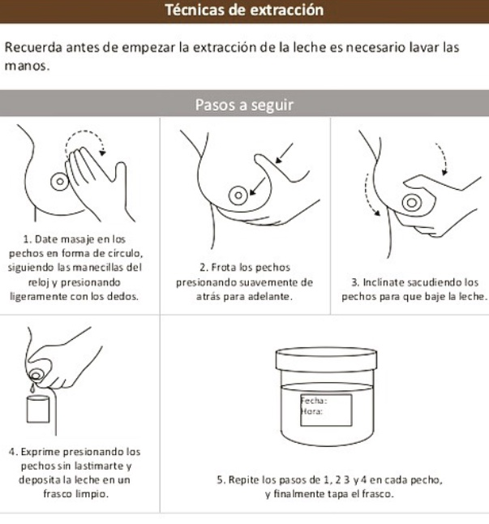
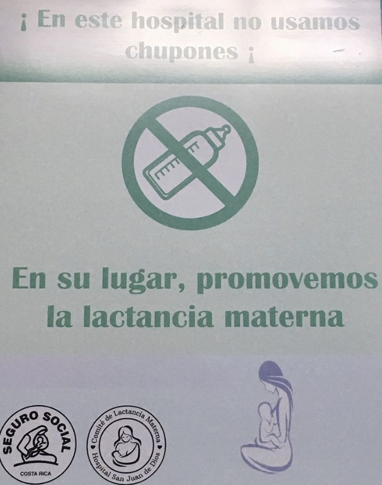
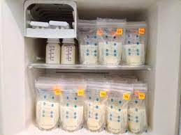

Preguntas frecuentes sobre Lactancia Materna

1. ¿Cuáles son los cuidados que deben darse a los pechos durante el periodo de amamantamiento?
- Los pezones deben permanecer secos.
- Se pueden exponer los pechos al aire por unos minutos.
- Siempre amamante al bebe de forma correcta
- Antes de colocar al bebé para lactar untar una gota de leche en los pezones.

2. ¿Que hago si tengo muy poca leche?
- La succión frecuente es el mejor estimulo para aumentar la producción de leche.
- Signos para saber que mi hijo recibe la cantidad de leche adecuada: Duerme y está tranquilo por periodos, aumenta de peso, orina o moja de 6 a 8 pañales diarios.

3. ¿Tengo mastitis, que hago?
- La mastitis es una infección del pecho (seno) que produce malestar, fiebre, y dolor en el pecho. Se debe consultar al médico cuando esto suceda.
- Ayuda, antes de dar de mamar colocarse pañitos de agua tibia y hacerse masajes circulares en el pecho afectado.
- Tomar medicamentos para el dolor, fiebre y antibiótico según indicación médica.
- Si el bebé no succiona lo suficiente se debe extraer la leche, los senos deben quedar lo mas vacios posibles.
- A pesar del dolor, en la medida de lo posible se debe continuar con el amamantamiento.

4. ¿Porque siento mis pechos duros?
- Se endurecen cuando se acumula la leche, esto ocasiona dolor.
- Verifique que este colocando al bebé en la posición correcta.
- Dele de mamar frecuentemente.
5. Siento los pechos más flojos que antes. ¿Se me está secando la leche?
- Es normal sentir esta sensación.
- La leche que el bebe necesita se produce en el momento que succiona.
- La leche materna no se almacena en el pecho.

6. ¿Como me extraigo la leche?
- Ambiente y posición adecuada.
- Manejo del Estrés (Técnica de visualización)
- Alimentación e hidratación (botella con agua)
- Técnica de extracción (Manual-Extractor)

7. ¿Para que puedo utilizar la leche extraída?
- Complemento con la lactancia.
- Para que otro miembro de la familia participe activamente en la alimentación.
- Hacer baños.
- Adjuntar a papillas(6meses)

8. ¿Como se almacena la leche materna ?
- Temperatura ambiente: 4 horas.
- Hielera con hielo: 24 horas.
- Refrigerador: 3 a 6 días.
- Congelador: 6 meses.